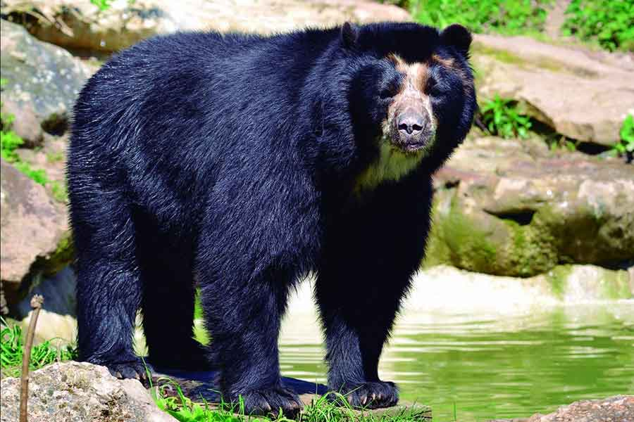

¿Qué se realisaba allí?
Se realisaban combates entre gladiadores,
¿Sabias Que...?

El Coliseo Romano es uno de los monumentos más reconocidos e importantes de la antigua Roma.

Se encuentra en el centro de Roma, en Italia.
Su construcción comenzó alrededor del año 72 d.c. y fue inagurado aproximadamente en el año 80 d.c.
Tiene unos 48 metros y está echo de piedra, hormigón y ladrillos.
Se realisaban combates entre gladiadores,
